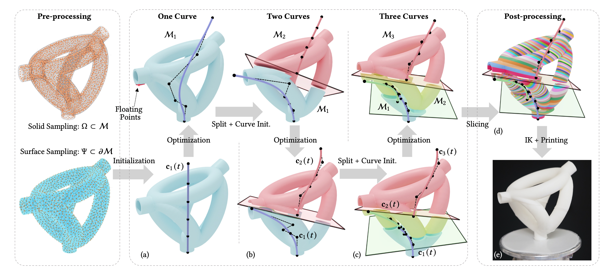
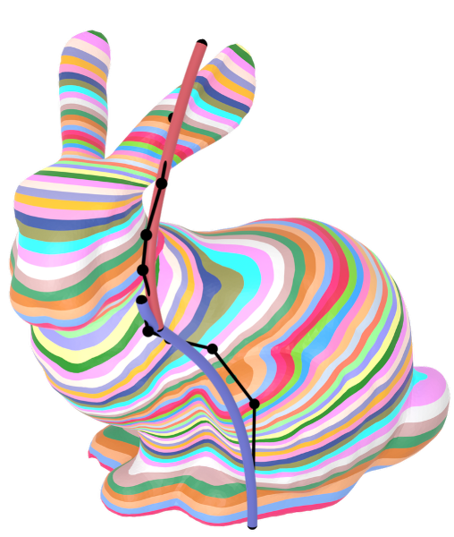
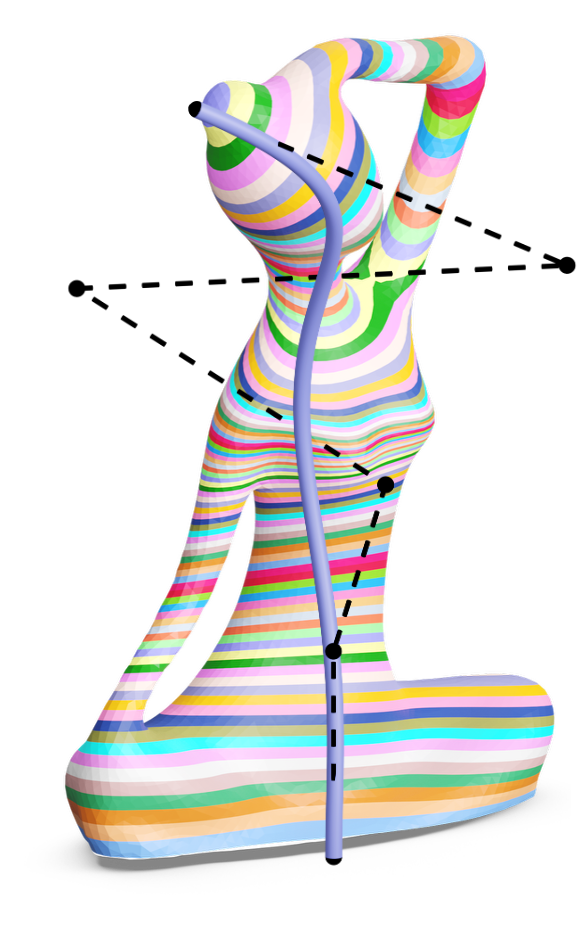
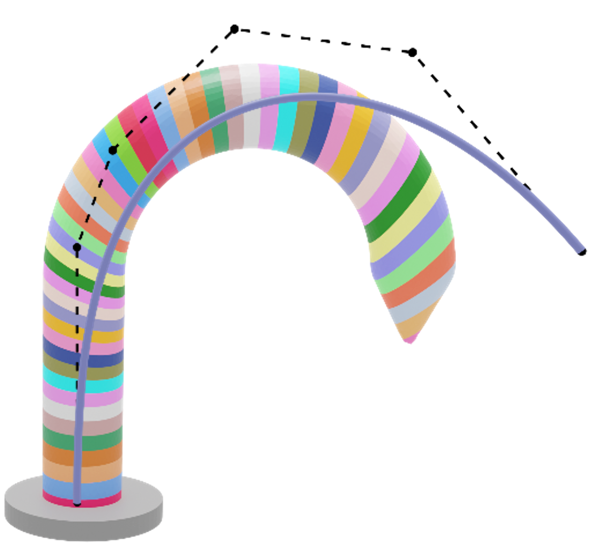
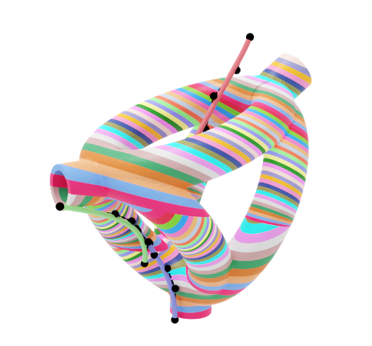
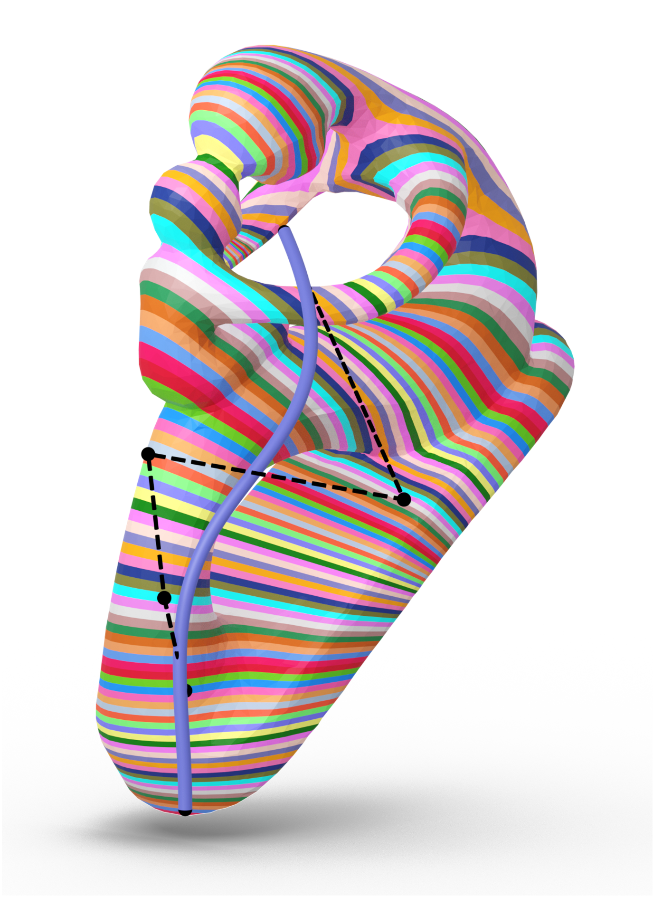
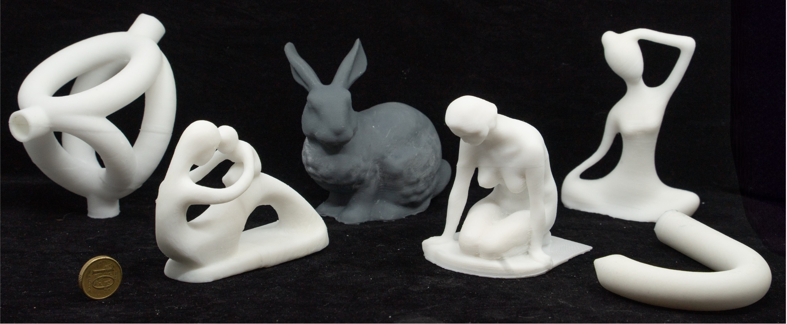

The authors gratefully acknowledge Professor A. John Hart and Nicholas S. Diaco of the Massachusetts Institute of Technology for their valuable comments on DLP printing. This research was supported by the InnoHK initiative of the Innovation and Technology Commission of the Hong Kong Special Administrative Region Government, the Chair Professorship Fund at the University of Manchester and UK Engineering and Physical Sciences Research Council (EPSRC) Fellowship Grant (Ref.#: EP/X032213/1).
@article{10.1145/3763352,
author = {Dai, Chengkai and Tao, Liu and Guo, Dezhao and Sun, Binzhi and Fang, Guoxin and Yam, Yeung and Wang, Charlie C. L.},
title = {Curve-Based Slicer for Multi-Axis DLP 3D Printing},
year = {2025},
volume = {44},
number = {6},
journal = {ACM Trans. Graph.},
month = dec,
articleno = {194},
numpages = {14} }